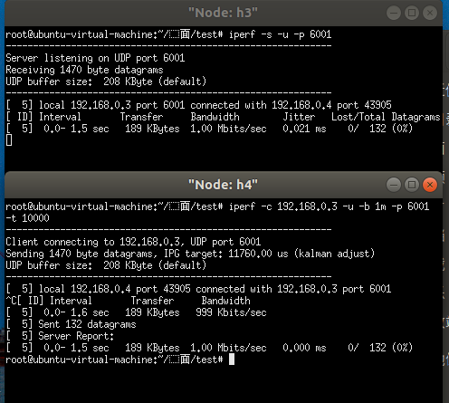

项目内容
Project2
- 在project1的基础上配置一个广播通信业务，假设主机1向所有其它主机进行广播；
- 使用Kruscal算法计算广播使用的最小生成树；
- 根据计算的生成树配置交换机上的转发流表项;
- 将广播业务在可视化平台上进行展示；
项目分析
按照项目的需求，我们需要在Project1实现的最长路配置通信的基础上配置一个广播通信业务，由于在配置路径的时候这两项可能会发生冲突，我们在该项目中将Project1的算法适当删去，以最小生成树来配置结点的路径。最终也跟Project1一样，将配置好的Mininet网络通过绘图模块进行可视化展示。
项目思路
拓扑网络搭建
这次的拓扑网络跟Project1的相差不大，详见https://github.com/mlinku/Ryu-Course_Project中Project2部分。
Ryu控制器编写
具体的代码讲解参见Project 1 代码讲解，这里只给出在Ryu控制器实现Kruskal算法的思路。
Kruskal算法
如果对Kruskal算法不够了解，可以参见个人博客。
1、定义self.father和self.rank用于实现按秩合并合并的并查集，分别用于存放结点对应的父结点及集合深度。并将所有交换机的self.father初始化为本身，self.rank初始化为1。
2、将边列表self.adjlist按照权重从小到大排序得到升序边列表。定义列表tree_links用于存储最小生成树边，all_links用于存储交换机之间的所有边，字典weight存储每条边的权重。
3、从权重最小的边开始选择，并使用并查集判断边上两个结点是否属于同一个簇。先将结点划分到不同簇中，每个簇中的结点表示一个无回路的连通分量。算法开始时，将n个结点划分到n个簇中，簇命名为self.father，每个簇一个结点，表示结点之间互不相通。
4、当选取一条边时，判断两结点是否在同一个簇。若它的两个结点属于不同的簇，则表明连通了两个不同的连通分量，因每个连通分量没有回路，所以连通后仍然不会有回路，因此保留这条边，将其存储在self.path，同时把两个簇进行合并成为一个簇（将简单的簇并入复杂的簇）；如果两个结点在同一个簇则舍弃这条边。
5、 当所有边都被遍历后算法结束。
Kruskal算法流程图
# 使用Kruskal算法 返回的是最小生成树的边
def kruskal(self):
# 初始化father和rank
self.father = [None] * (len(self.switches) + 1)
self.rank = [1] * (len(self.switches) + 1)
for sw in self.adjdict.keys():
self.father[sw] = sw
# 判断所有交换机是否连通 如果不连通直接返回
if len(self.switches) <= 0 or len(self.adjlist) < len(self.switches) - 1:
return
# 按权重排序 得到权重从小到大的边列表 self.adjlist -> (sw1,sw2,weight) 所以x[2]为权重
self.adjlist.sort(key=lambda x: x[2])
# tree_links用于存储画图用的最小生成树边
tree_links = []
# all_links用于存储交换机之间所有的边
all_links = [(adj[0], adj[1]) for adj in self.adjlist]
# weight用于存储所有交换机之间边的权重
weights = dict(zip(all_links, [adj[2] for adj in self.adjlist]))
# kruskal算法的核心部分 从权重最小的边开始选择 保证每个结点只加入一次 直到所有结点都被选择
for List in self.adjlist:
# 用并查集判断两个结点是否在同一个簇里面
if self.find_father(List[0]) != self.find_father(List[1]):
# 将两个结点合并为同一个簇
self.union(List[0], List[1])
# 初始化队列防止出现error
if List[0] not in self.path.keys():
self.path[List[0]] = []
if List[1] not in self.path.keys():
self.path[List[1]] = []
# self.path存储最小生成树的边
self.path[List[0]].append(List[1])
self.path[List[1]].append(List[0])
tree_links.append((List[0], List[1]))
tree_links.append((List[1], List[0]))
# 并查集的寻找父亲结点函数
def find_father(self, sw):
return sw if sw == self.father[sw] else self.find_father(self.father[sw])
# 并查集的归并函数 按按秩合并 将简单的簇并入复杂的簇
def union(self, new_sw, pre_sw):
new = self.father[new_sw]
pre = self.find_father(pre_sw)
# 简单的并入复杂的，防止高度变长太多
if self.rank[new] <= self.rank[pre]:
self.father[new] = pre
else:
self.father[pre] = new
if self.rank[new] == self.rank[pre] and new != pre:
self.rank[pre] += 1项目展示
我们测试时是使用iperf灌udp包进行测试，需要事先选择两个交换机，一个作为源交换机对另一个目的交换机进行灌包。虽然数据包是作为单播进行设计的，但是我们依然需要做成广播。意思是假如目的ip是主机3的ip，虽然目的ip是主机3的ip，但其他主机也得收到这个包，收到包丢不丢是其他主机的事情，我们要保证把包送过去。只要不发生丢包即可证明我们的最小生成树配置成功。
广播主机的选择
选择4号交换机对外广播，3号交换机灌包
最小生成树路径生成结果
灌包测试
选取4号主机向3号主机灌包
可以看到图中发了132个包，无丢包。
监测数据
用7号主机进行监测
用7号主机监测，无丢包
两个交换机的流表项
n_packets的值为133，刚好比灌包统计的结果多一个。这是因为iperf udp灌包之前会先发送一个数据包去建立连接，这就是多出来的那一个。
可视化展示
- 本文链接：http://mlinku.top/2021/11/07/Project%202%20%E6%9C%80%E5%B0%8F%E7%94%9F%E6%88%90%E6%A0%91/
- 版权声明：本博客所有文章除特别声明外，均默认采用 许可协议。